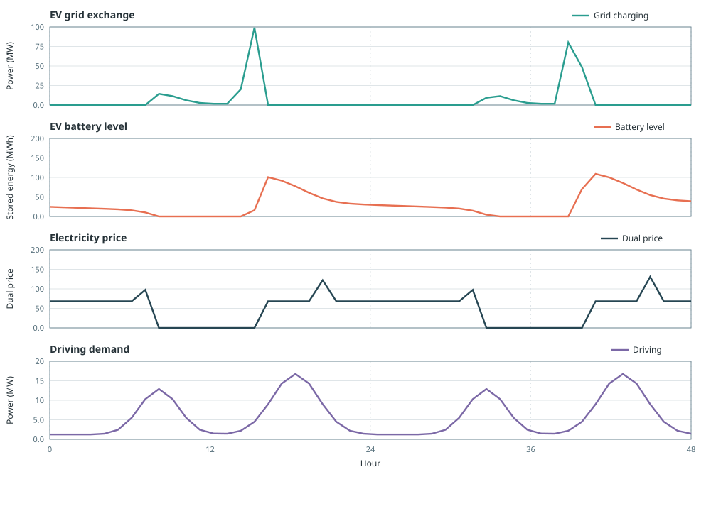
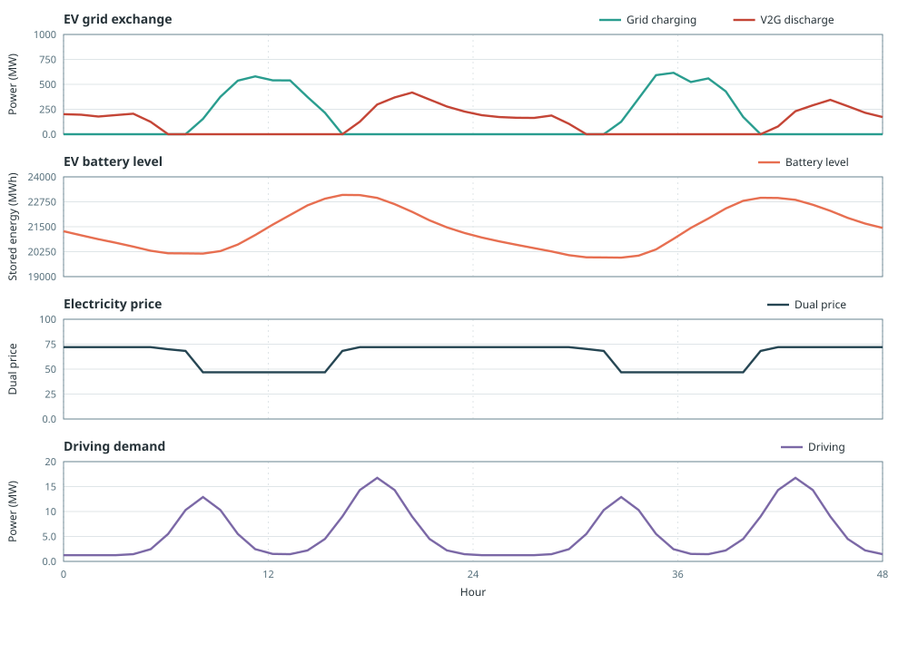

Electric Vehicles
The EV API is not fixed yet. The modes, keyword arguments, component and port structure, and reporting semantics may change substantially in later Posy2 versions.
This example compares smart charging and vehicle-to-grid on the same fleet and driving need: how grid charge, discharge, and OCGT generation change.
makeEV picks that behaviour with exactly one of three flags: fixed_profile, smart_charging, or vehicle_to_grid. This page keeps the same demand, PV, OCGT backup, and driving need, and only flips the flag: smart_charging=true first, then vehicle_to_grid=true.
The setup is:
- country1 workbook demand plus an explicit non-uniform daily demand profile
- 1500 MW of PV
- a fleet whose annual driving energy is 50,000 MWh
- OCGT backup that covers residual load
The driving follows a fixed hourly profile. With smart charging the optimiser only chooses when to fill the battery. With V2G it also chooses when to sell power back to the node.
Smart charging
Cars take power from the grid and give it up only as driving. Charge hours are free, so the optimiser charges when the dual is low to cover later driving. With no grid discharge, annual grid charge exceeds annual driving only by the charging losses: at 90% efficiency, 55,555.56 MWh of charge supports the 50,000 MWh driving need.
using Posy2
using Nosy
using HiGHS
import JuMP: set_silent
# Simulation and Posy2 input configuration
sim = Sim(Model(HiGHS.Optimizer); mesh=TimeMesh())
set_silent(model(sim))
example_data_dir = joinpath(pkgdir(Posy2), "data")
snapshot = Snapshot(sim, Dict(:posy => Posy2Options(
data_dir=example_data_dir,
techdata_file="tech_data.xlsx",
timeseries_file="time_series.xlsx",
tech_mode=:arguments,
timeseries_mode=:excel,
)))
# Electricity node (evalprice for dualprice) and CO2 sink
electricity = Node("country1", EnergyCarrier("electricity country1", sim), rule=:curtailed, evalprice=true, tags=[:electricity])
co2 = Node("CO2", CO2Carrier("CO2", sim), rule=:curtailed, tags=[:co2])
# Hourly electricity demand from the time-series workbook
makedemand("Demand", "country1", electricity, snapshot)
# Additional exogenous demand with distinct morning and evening peaks
daily_extra_demand = Float64[
30, 15, 0, 0, 15, 45, 90, 140, 80, 30, 0, 40,
110, 50, 10, 20, 70, 150, 100, 30, 90, 60, 30, 20,
]
makedemand(
"Variable demand", "country1", electricity, snapshot;
profile=repeat(daily_extra_demand, 365),
)
# Fixed 1500 MW PV
makeintermittentsource(
"Solar", "PV", electricity, co2, snapshot;
cap=1500.0,
weatheryear=2019,
)
# Smart-charging fleet: 50 000 MWh/year driving; charge only
makeEV(
"EV", 50000.0, electricity, snapshot;
fixed_profile=false,
smart_charging=true,
zone="country1",
charging_eff=0.9,
max_charging_power_per_ev=0.01, # MW per vehicle, * fleet size
battery_capacity_per_ev=0.06, # MWh per vehicle, * fleet size
yearly_consumption_per_ev=0.02, # MWh/year per vehicle (sets fleet size)
)
# Fixed OCGT backup (continuous UC with startup cost, same plant in both cases)
makedispatchable(
"OCGT", "OCGT", electricity, co2, snapshot;
cap=1200.0,
fuel_cost=68.24,
unit_size=100.0,
uc=true,
startup_cost=6_270.0,
min_power=0.3,
min_uptime=2.0,
min_downtime=2.0,
startup_duration=1.0,
shutdown_duration=1.0,
)
# Minimise total system cost and extract solved values
optimize!(snapshot, cost(snapshot))
result = extract(snapshot)Annual driving is the fleet's 50 000 MWh target. Charge is higher because of the 90% charging efficiency, and nothing is sold to the node. OCGT still covers residual demand:
julia> driving = balance(result, "EV country1", :output, energy; collapse=true, aggregate=true)
50000.00000000169
julia> charge = balance(result, "EV country1", :input, energy; collapse=true, aggregate=true)
55555.55555555601
julia> balance(result, "OCGT country1", :output, energy; collapse=true, aggregate=true)
5.091619222628578e6The figure uses 25–26 June, when the additional demand peaks, PV, and OCGT commitment produce several price levels. Charging lines up with lower duals, and the battery-level panel shows how energy moves between charging and the fixed driving profile. Nothing is sold back to the node.

Vehicle-to-grid
The same fleet keeps the same driving need, and may also inject into the electricity node. Discharge adds a compensation cost per MWh, so the optimiser sells back mainly when the node dual is high enough to cover that cost. Charging gathers when the dual is low.
using Posy2
using Nosy
using HiGHS
import JuMP: set_silent
# Simulation and Posy2 input configuration
sim = Sim(Model(HiGHS.Optimizer); mesh=TimeMesh())
set_silent(model(sim))
example_data_dir = joinpath(pkgdir(Posy2), "data")
snapshot = Snapshot(sim, Dict(:posy => Posy2Options(
data_dir=example_data_dir,
techdata_file="tech_data.xlsx",
timeseries_file="time_series.xlsx",
tech_mode=:arguments,
timeseries_mode=:excel,
)))
# Electricity node (evalprice for dualprice) and CO2 sink
electricity = Node("country1", EnergyCarrier("electricity country1", sim), rule=:curtailed, evalprice=true, tags=[:electricity])
co2 = Node("CO2", CO2Carrier("CO2", sim), rule=:curtailed, tags=[:co2])
# Hourly electricity demand from the time-series workbook
makedemand("Demand", "country1", electricity, snapshot)
# Same additional exogenous demand as in the smart-charging case
daily_extra_demand = Float64[
30, 15, 0, 0, 15, 45, 90, 140, 80, 30, 0, 40,
110, 50, 10, 20, 70, 150, 100, 30, 90, 60, 30, 20,
]
makedemand(
"Variable demand", "country1", electricity, snapshot;
profile=repeat(daily_extra_demand, 365),
)
# Fixed 1500 MW PV (same as smart-charging case)
makeintermittentsource(
"Solar", "PV", electricity, co2, snapshot;
cap=1500.0,
weatheryear=2019,
)
# Same fleet and driving need as smart charging, with grid discharge enabled
makeEV(
"EV", 50000.0, electricity, snapshot;
fixed_profile=false,
vehicle_to_grid=true,
zone="country1",
charging_eff=0.9,
max_charging_power_per_ev=0.01, # MW per vehicle, * fleet size
max_dispatch_power_per_ev=0.01, # MW per vehicle V2G rating, * fleet size
battery_capacity_per_ev=0.06, # MWh per vehicle, * fleet size
yearly_consumption_per_ev=0.02, # MWh/year per vehicle (sets fleet size)
compensation=20.0, # currency/MWh on grid discharge
)
# Same OCGT plant as the smart-charging case
makedispatchable(
"OCGT", "OCGT", electricity, co2, snapshot;
cap=1200.0,
fuel_cost=68.24,
unit_size=100.0,
uc=true,
startup_cost=6_270.0,
min_power=0.3,
min_uptime=2.0,
min_downtime=2.0,
startup_duration=1.0,
shutdown_duration=1.0,
)
# Minimise total system cost and extract solved values
optimize!(snapshot, cost(snapshot))
result = extract(snapshot)Driving stays at 50 000 MWh. With V2G the fleet can also sell power back, so it cycles like a battery: annual charge rises well above driving, grid discharge appears, and OCGT generation reduces:
julia> outputs = balance(result, "EV country1", :output, energy; collapse=true, aggregate=false);
julia> driving = outputs["driving"]
50000.00000000169
julia> discharge = outputs["output"]
375144.1624858788
julia> charge = balance(result, "EV country1", :input, energy; collapse=true, aggregate=true)
472382.40276208974
julia> balance(result, "OCGT country1", :output, energy; collapse=true, aggregate=true)
4.9339712652762635e6
julia> price = dualprice(result.nodes["country1"]);
julia> sort(unique(round.(price[4201:4248]; digits=3)))
5-element Vector{Float64}:
46.835
68.24
69.914
70.22
72.039dualprice returns the hourly node dual. The selected two-day window contains five price levels rather than the nearly flat winter window.
On the same June window as above, charge sits under low duals and V2G discharge appears under higher duals. The battery-level curve makes the intertemporal balance visible when discharge and charging differ within the plotted window.

Comparing the two modes
Both runs keep the same country1 demand, 1500 MW of PV, OCGT backup, and 50 000 MWh annual driving need. Only the EV mode flag flips from smart_charging=true to vehicle_to_grid=true. Smart charging exposes driving only. V2G adds a grid output (discharge). Driving energy matches in both cases. OCGT generation reduces under V2G because that discharge can cover residual load.
| Smart | V2G | |
|---|---|---|
:output ports | driving only | driving + output |
| Grid discharge (MWh/year) | 0 | 375144 |
| OCGT generation (MWh/year) | 5.092e6 | 4.934e6 |
| Driving energy (MWh/year) | 50000 | 50000 |